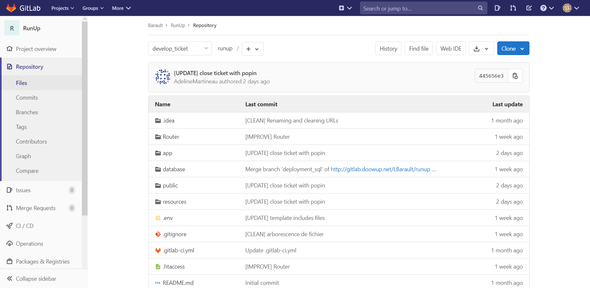

Chaque semaine, une sauvegarde complète du projet était effectuée sur un cloud et hébergée par un tiers. La sauvegarde se faisait manuellement et non automatiquement.
Intégration continue :
GitLab est l'interface utilisé pour le versionning du projet. C'est également le moyen qui permet d’assurer
la continuité d’un service en cas de panne. Si une panne survient, un redéploiement sur une autre machine
sera effectué.
Procédure :
Chaque membre du projet disposait de sa propre branche en local portant de nom de la fonctionnalité qui leur était assignée.
Pour ma part : develop_ticket. Afin de prendre en compte les changements effectués au cours du développement, chaque membre
du projet procédait à un push sur sa branche. Le merge se faisait sur une brancche supérieur nommée develop.
Guide utile :
Un document spécifiant des bonnes pratiques à utilisé pour le versionning était mis à notre disposition.
Elles devaient être utilisées à chaque commit afin de définir leur rôle.
[IMPROVE] → Nouvelles fonctionnalitées
[UPDATE] → MAJ d’une fonctionnalitée
[FIX] → Correction d’un bug
[LANG] → changement du contenu non-dynamique
[CLEAN] → Nettoyage de code
De plus, pour chaque modification propre à un fichier css ou js, une commande était utilisée afin de
mixer leur changement dans un autre fichier nommer general.css ou general.js.
Cette procédure était nécéssaire pour comptabiliser les changements.
Ces derniers se trouvaient dans un dossier à la racine du projet.
Evolution de la structure et impact:
Au bout de deux semaines de projet, un merge commun à été effectué par l'ensemble des membres afin
de prendre en compte des changements majeurs sur l'arborescence du projet.
Intégration d'un router :
Dans cette architecture MVC maison, l'intégration d'un router à été mis en place. Il y a trois raisons principales
à cela :
Premièrement, cela permet une simplification du code et une optimisation sur l’appel des routes.
Deixièmement cela permet une facilitée de prise en main
Enfin, une maintenance et nettoyage des urls.

Procédure :
Sur ce projet, il n’y avait pas de serveur de déploiement. Autrement dit, tous les tests fonctionnels de chaque service,
par exemple le module ticket, se faisaient en local. La branche git concernant le service était récupérée par le maître de
stage puis testé manuellement ensuite.
La base de données utilisé était MySQL sous la plateforme de développement Web WampServer. Chacun des membres du projet disposaient de
sa propre base de données afin de faire fonctionner l'environnement en local.
Néanmoins, cela devenait contraignant lorsqu'il fallait récuperer
les modifications de la BDD de chaque membre. Aucun système ne permet de gérer cela pour l'instant. La solution première
consiste à s'envoyer les scripts SQl et que chaque membre les exécutes de son côté. Le problème est que cela devient vite
source d'erreur de manipulation et de non-compatibilité.
Objectif d'évolution à terme :
La mise en place un déploiement de base. Le but de ce déploiement est d'inscrire les instructions dans des fichiers,
dont l'exécution suit la même procédure pour tout le monde. Ce système est inspiré des Frameworks php.
Au lieu d'altérer la base de données avec des requêtes ou via l'interface phpmyadmin, les développeurs passent par des fichiers
php appelés migrations, générées via une commande php.